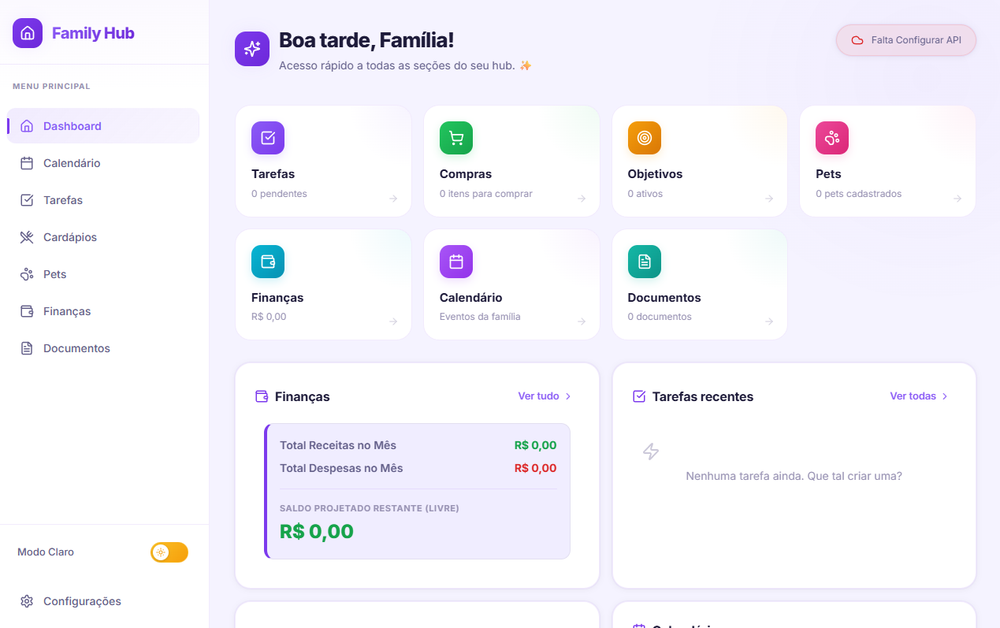

FamilyHub
Aplicativo desktop para gestão familiar completa, construído com Tauri v2 e React 19. Unifica em uma única interface finanças, tarefas, documentos, calendário, cardápio semanal e controle de pets, com sincronização em tempo real via Supabase Realtime e sistema de atualização automática nativo.
Desenvolvido em 2026.
Ver Projeto